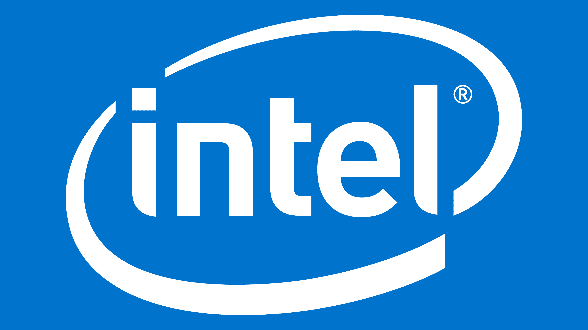

In particular, three brands are responsible for developing the major CPU and GPU technologies: Intel,NVIDIA, and AMD. For most brands, higher numbers denote either more cores (for CPUs) or newer generations (for both CPUs and GPUs).
Intel for the longest time was the primary CPU designer. Their models include pentium, i3, i5, i7, etc.

NVIDIA's specialty is GPUs. Its GeForce and RTX series GPUs have dominated the market for some time.

AMD competes with both Intel and NVIDIA in their respective areas. AMD offers the Ryzen CPU series and the Radeon GPU series.